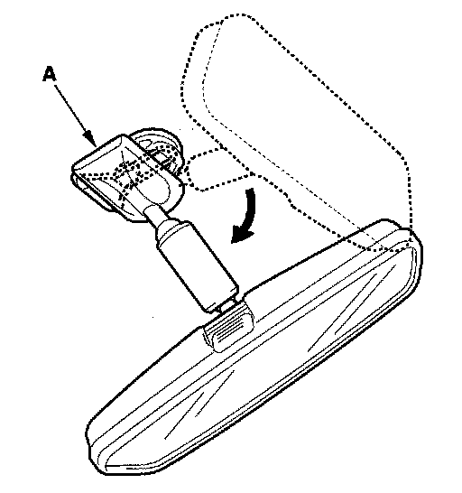
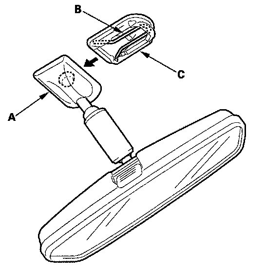
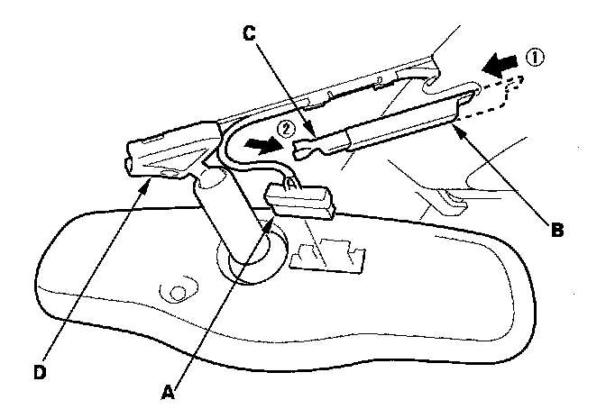
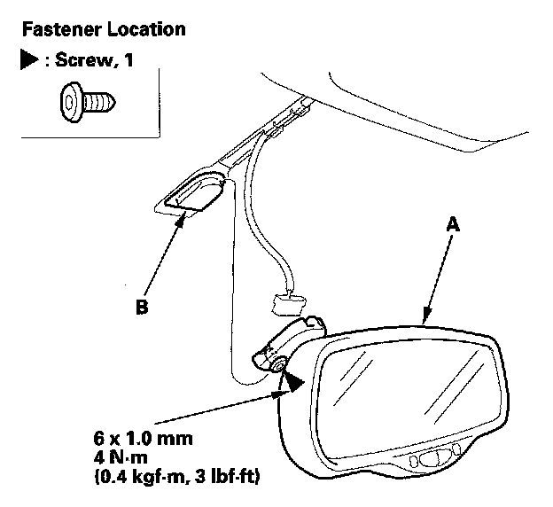

Rearview Mirror
Rearview Mirror ReplacementWithout automatic dimming mirror

1. Turn the rearview mirror base (A) 90 °.

2. Slide the rearview mirror (A) down toward the bottom of the windshield to detach it from the spring (B) in the mount (C).
3. If necessary, remove the spring from the mount.
4. Install the rearview mirror in the reverse order of removal.
With automatic dimming mirror

1. Disconnect the connector (A).
2. Slide the mirror harness upper cover (B) forward, then remove the mirror harness cover (C) from the mirror base (D).

3. Using a T20 TORX bit, loosen the screw, then slide the rearview mirror (A) rearward and off the mount (B).
4. Install the mirror in the reverse order of removal, and note these items:
- Before installing the mirror, remove the TORX screw, and apply medium strength type liquid thread lock to it.
- Make sure the connector is plugged in properly.